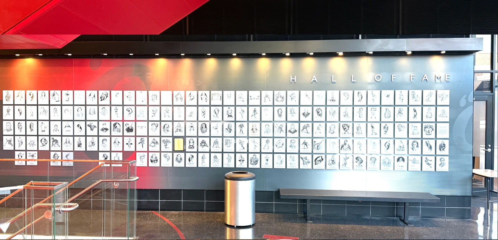

Before / after and the panorama photo are in Layers.
Each one fills with the 2026 run and switches to the space options scenario. Plaques go in scattered, like the wall today: spare spots stay empty between them and no two from the same induction class touch.
Turn a section off and the fill and All spots skip it · View flies to it.